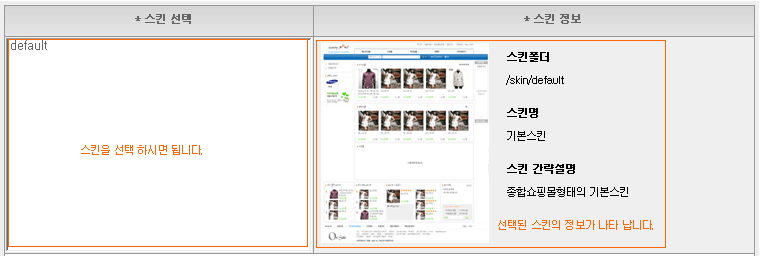

A. 스킨선택 : 사용 하실 스킨을 선택 하시면 됩니다.
B. 스킨정보 : 선택한 스킨의 썸네일 이미지, 폴더정보, 스킨명, 스킨에 대한 간략설명이 나타 납니다.
! 스킨은 기본스킨(무료)과 유료 스킨이 있으며 계속 추가 될 예정 입니다.
! 다운(구매)받은 스킨을 해당폴더(/skin)에 올리시고 스킨관리에서 선택하셔서 사용 하시면 됩니다.
! 스킨에따라 상품이미지 및 사용된 이미지 사이즈가 다를 수 있으니 확인 하시고 사이즈를 변경 해 주셔야 됩니다.
